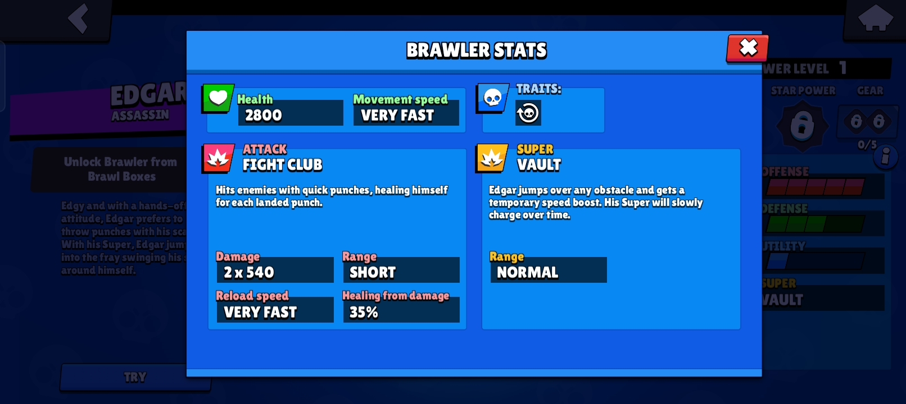
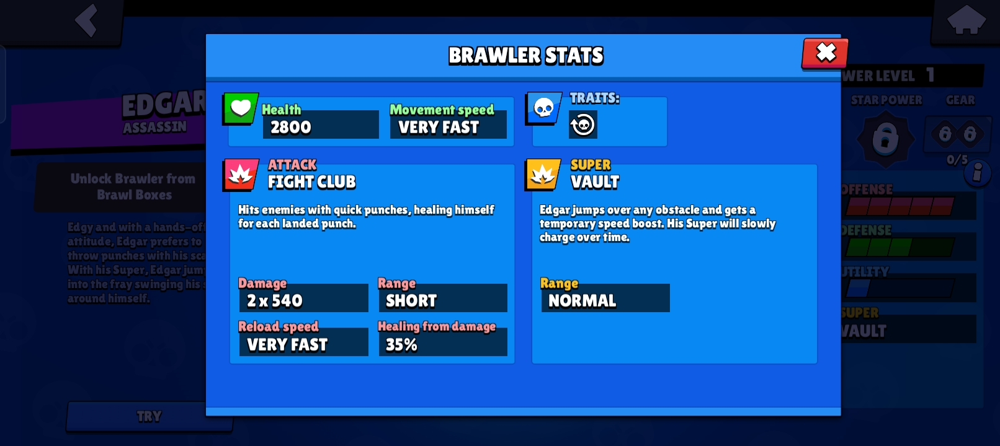
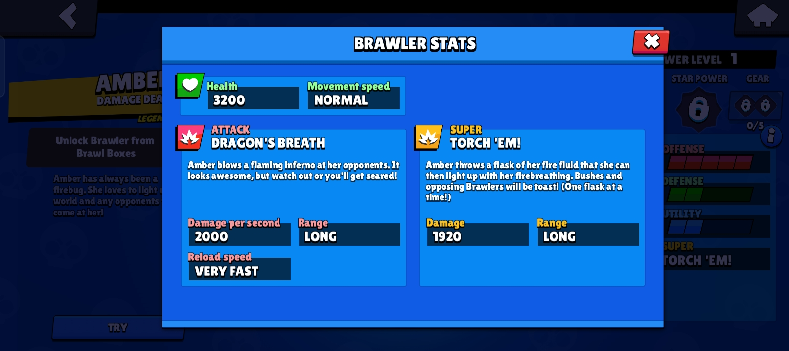
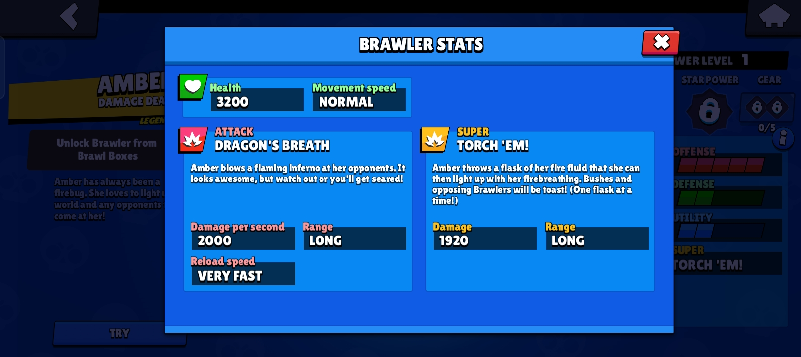
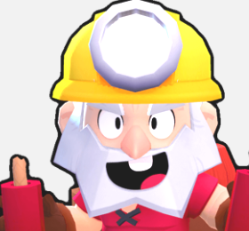
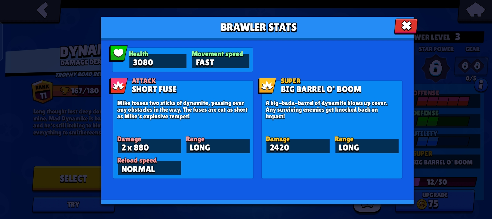

Top Brawlers in Brawl Stars
 

Edgar
Edgar is an Epic Brawler.He has high and consistent burst damage and great mobility with his Super and his very fast movement speed, but low health and a short attack range. His Trait allows his Super to charge itself over time. His attacks throw two quick short-ranged punches with an extremely fast cooldown and reload speed that also slightly heal him per hit on an enemy Brawler. His Super is a quick jump over obstacles that grants him a speed boost upon landing.
Credits to Fandom for Edgar 

Amber
Amber is a Legendary Brawler that has moderate health and a high damage output. She attacks by shooting a continuous, long-ranged stream of fire. Amber’s Super is a flask of fire fluid that creates a flammable puddle on the ground which can be ignited by her attack, and when ignited, sets enemies in it on fire to burn over time.
Credits to Fandom for Amber 
Dynamike
Dynamike is a Common Brawler who is unlocked as a Trophy Road reward upon reaching 2000 Trophies. He has low health but a high damage output. He attacks by lobbing sticks of dynamite over obstacles that blow up and deal high damage in a medium radius. For his Super, he lobs a large barrel of dynamite that deals very high damage and knocks surviving enemies back in a large radius while also destroying obstacles.
Credits to Fandom for Dynamike